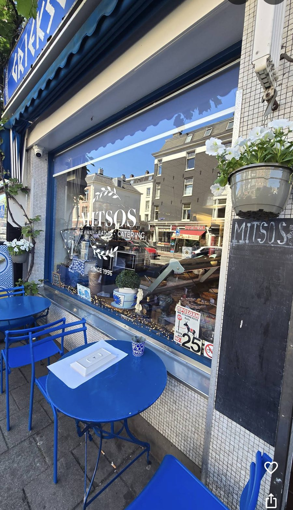

MITSOS
Griekse traiteur · sinds 1996
Traiteur
Al sinds 1996 maken we elke dag Griekse gerechten zoals thuis: moussaka, pastitsio, gevulde wijnbladeren, spanakopita en een volle vitrine met meze.
Adres
Tweede Hugo de Grootstraat 25H
1052 LB Amsterdam
Openingstijden
ma–za 00:00–00:00
zondag gesloten
Eat in & take away
Neem plaats aan een van onze blauwe tafeltjes op de stoep, of neem je bord mee naar huis.
Pita gyros, souvlaki en de schotels uit de vitrine: alles maken we zelf, met olijfolie, oregano en de recepten van de familie.
Catering
Een Grieks buffet op kantoor, een verjaardag of een bruiloft? Mitsos verzorgt catering voor kleine en grote gezelschappen in Amsterdam en omgeving.
Meze, warme ovenschotels, salades en zoet. We stellen het menu samen met jou, op maat van je gasten en je budget.
info@mitsos.nl
Telefoon
020 000 00 00